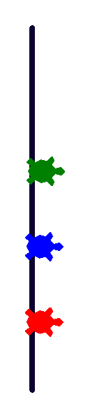

Глава 14 · Создаём объекты реального мира
Мини-проект: гонка Turtle v2
Гонка сама становится объектом — управляет участниками, а не дублирует их логику.
Мини-проект: гонка Turtle v2
Расширим проект из раздела 14.4. На этот раз не только участники (
Uchastnik) — сама гонка тоже становится объектом: класс Gonka
хранит список участников, рисует финишную линию и определяет порядок финиша —
ещё один пример композиции (раздел 14.13), но уже объект, управляющий другими объектами.
gonka_v2.py
import turtle
import random
random.seed(7)
screen = turtle.Screen()
screen.setup(520, 420)
class Uchastnik:
def __init__(self, cvet, startovyj_y):
self.t = turtle.Turtle()
self.t.shape("turtle")
self.t.color(cvet)
self.t.penup()
self.t.goto(-220, startovyj_y)
self.cvet = cvet
self.finishiroval = False
def sdelat_shag(self):
if not self.finishiroval:
self.t.forward(random.randint(1, 10))
def proverit_finish(self, finish_x):
if self.t.xcor() >= finish_x:
self.finishiroval = True
return self.finishiroval
class Gonka:
def __init__(self, cveta, finish_x):
self.finish_x = finish_x
self.uchastniki = [
Uchastnik(cvet, i * 50 - 75) for i, cvet in enumerate(cveta)
]
self.rezultaty = []
def narisovat_finish(self):
liniya = turtle.Turtle()
liniya.hideturtle()
liniya.penup()
liniya.goto(self.finish_x, -120)
liniya.pendown()
liniya.pencolor("#0D0230")
liniya.pensize(3)
liniya.setheading(90)
liniya.forward(240)
def sygrat_do_kontsa(self):
self.narisovat_finish()
while len(self.rezultaty) < len(self.uchastniki):
for u in self.uchastniki:
u.sdelat_shag()
if u.proverit_finish(self.finish_x) and u.cvet not in self.rezultaty:
self.rezultaty.append(u.cvet)
gonka = Gonka(["red", "blue", "green"], 210)
gonka.sygrat_do_kontsa()
screen.exitonclick()Результат выполнения

Объекты, сотрудничающие друг с другом
Gonka не дублирует логику шага или проверки финиша — она делегирует её каждому Uchastnik (u.sdelat_shag(), u.proverit_finish(...)) и только координирует их. Это типичная для ООП картина: не один гигантский класс, который умеет всё, а несколько небольших классов, каждый отвечает за своё, и сотрудничающих через понятные методы друг друга.★★★ Задача повышенной сложности
Таблица результатов
Добавьте Gonka метод tablitsa_rezultatov(self), возвращающий self.rezultaty в виде пронумерованного текста («1 место: red», «2 место: blue», ...).
Практика: гонка Turtle v2
Модуль turtle открывает нативное окно Python — выполните локально в VS Code, PyCharm или Jupyter
Практика выполняется локально